Clarity, ownership, and room to grow.
I’ve led backend teams of five to seven developers, with a focus on mentoring, code review, and helping people build confidence in their decisions.
ENGINEERING LEADER. HANDS-ON BUILDER.
I’m Rana Hamid — a Development Manager who connects deep technical craft with people leadership to build software that matters.
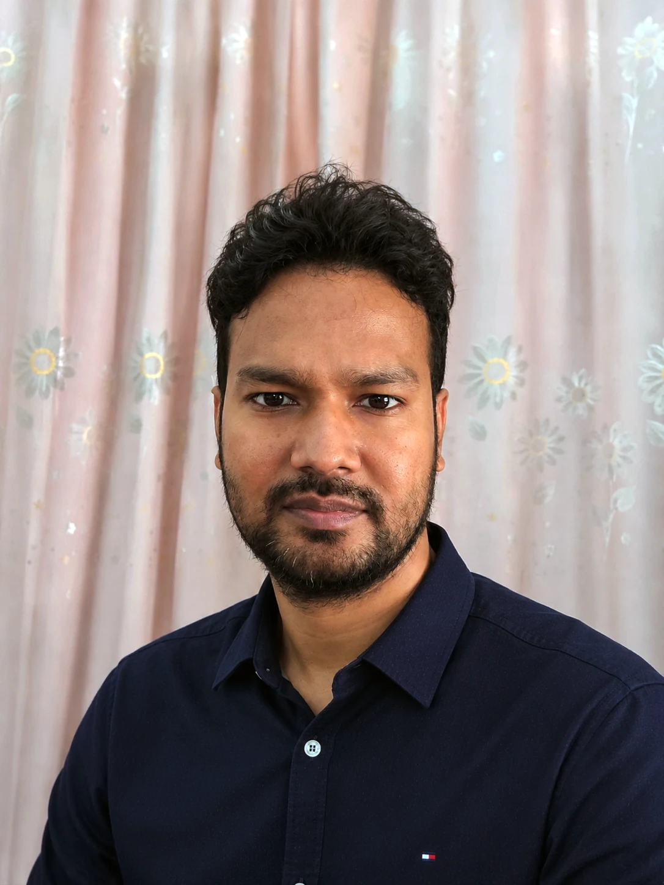
I’ve spent more than a decade turning complex business needs into dependable software — from ERP systems that connect entire organizations to healthcare platforms that support patients and clinicians.
At MyMedicalHUB, I lead across backend, frontend, mobile, and AI engineering. I stay close to the architecture and the code, while helping people grow and teams deliver with confidence.
My approach is simple: understand the problem, build with care, and make the team stronger along the way.
Software engineering experience
Backend, frontend, mobile & AI
Academic excellence, 2014
I’ve led backend teams of five to seven developers, with a focus on mentoring, code review, and helping people build confidence in their decisions.
I work with product leaders, clinicians, physical therapists, and executives across the US and Philippines to turn real needs into clear engineering plans.
From requirements and architecture to sprint execution, release readiness, and production support, I keep quality and customer needs in view.
WHERE I MAKE A DIFFERENCE
From the first architecture decision to a dependable production release, I bring the whole picture into focus.
Maintainable systems, secure APIs, and clear boundaries that help products grow without losing their foundations.
Hands-on Business Central and NAV expertise, connecting ERP workflows to the way an organization actually operates.
Azure services, delivery automation, and AI-assisted workflows that solve practical product and operational problems.
Teams with clear ownership, thoughtful technical standards, and a shared understanding of what success looks like.
INSIDE MY TOOLKIT
The technologies and practices behind my work, from .NET services and ERP extensions to real-time communication and applied AI.
Application design with clear boundaries, reusable business logic, and maintainable .NET services.
API contracts, validation, identity, and integrations that connect enterprise applications.
Relational and document databases, data-access patterns, and caching for responsive applications.
Browser communication, asynchronous integration, background work, and service gateways.
Cloud hosting and repeatable delivery, supported by version control and production diagnostics.
Applied AI integrations, retrieval, and extracting structured information from documents.
ERP customization, web interfaces, charting, reporting, and business-process automation.
Testable code, reliable integrations, and enough diagnostic context to understand production behavior.
SELECTED WORK
A selection of the products and enterprise systems I’ve helped build, shape, and deliver.
Explore by name, domain, client, or technology.
A cloud platform connecting patient information, providers, and treatment collaboration.
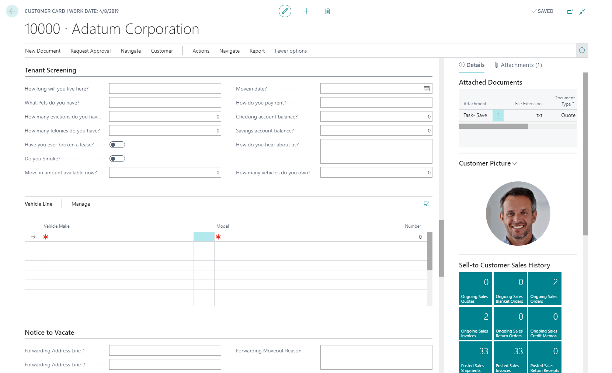
Real estate ERP bringing tenants, properties, contracts, and invoicing into one workflow.
AI-assisted documentation with OCR, OpenAI, and secure APIs for healthcare teams.
A cloud-ready golf club platform with centralized operations, notifications, and reporting.
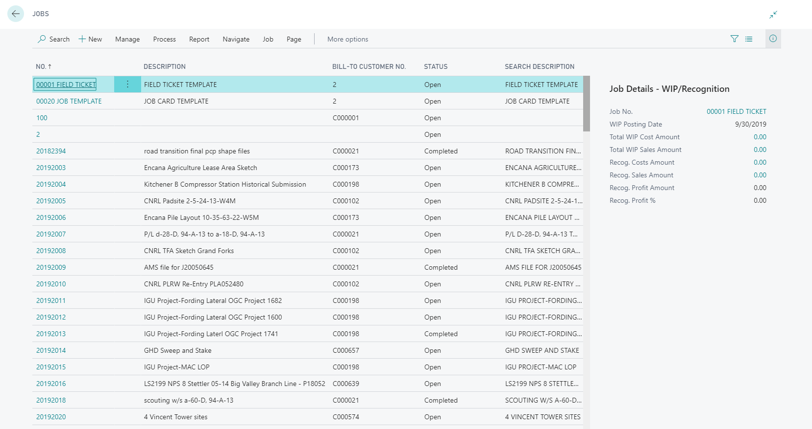
ERP customization aligning project services, jobs, financial workflows, and operational reporting.
A cross-platform forex application connecting live communication with MetaTrader integrations.
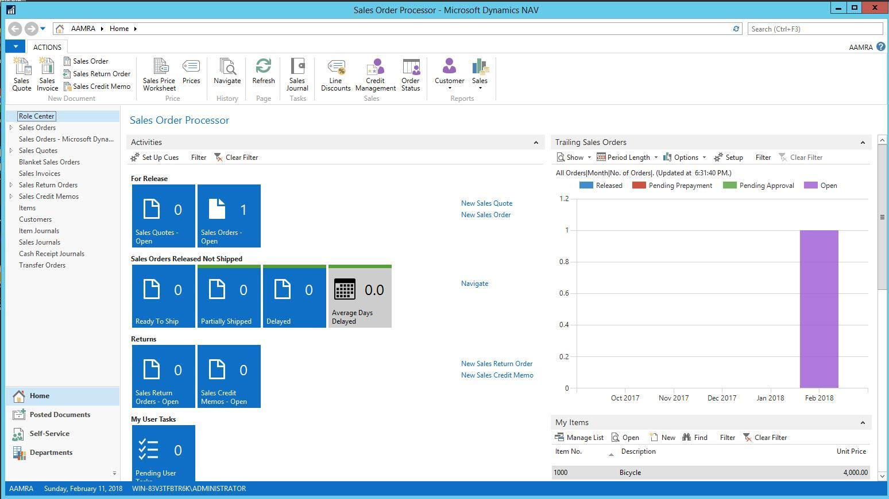
A Dynamics NAV engagement spanning distribution, manufacturing, and enterprise business automation.
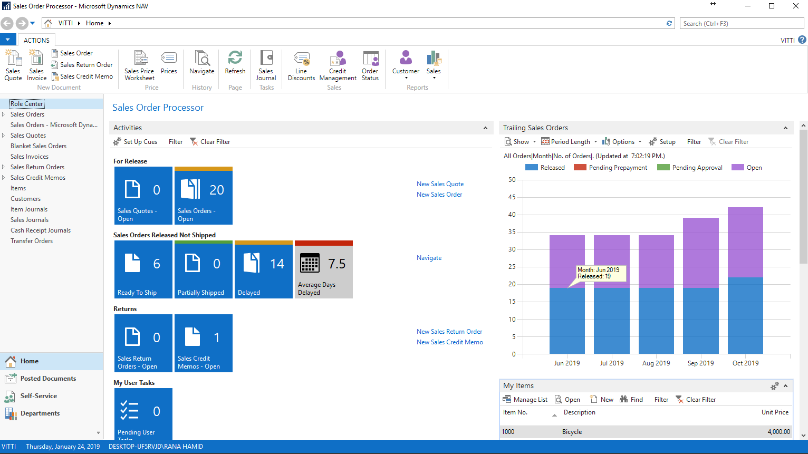
A Microsoft Dynamics NAV 2018 project in the training domain.
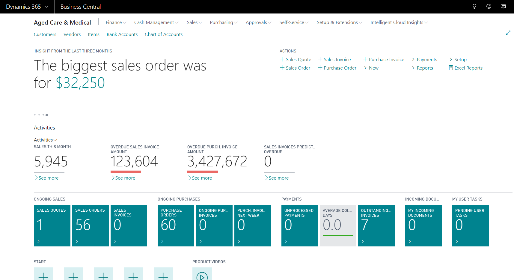
Business Central ERP for an Australian aged-care, medical, and pharmaceutical business.
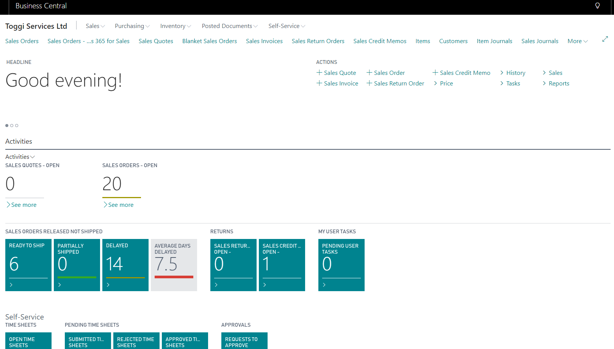
An internal Business Central ERP implementation for a hardware and services company in Bangladesh.
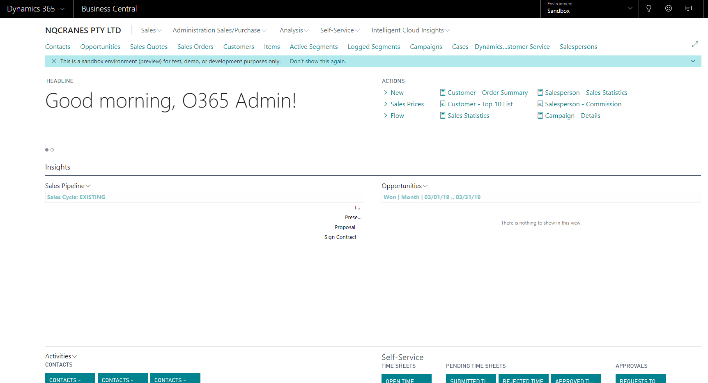
An ERP and sales solution combining Business Central, AL, and Dynamics 365 Sales.
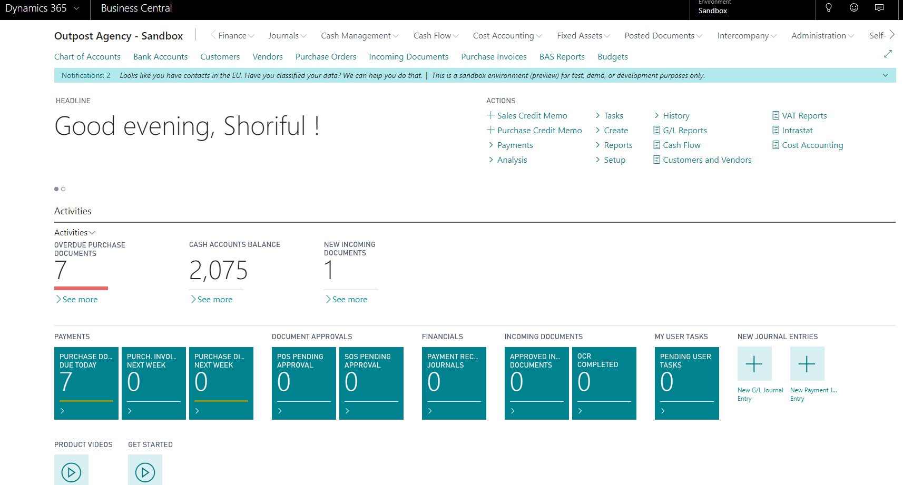
A Business Central ERP engagement for a fashion distributor and agent.
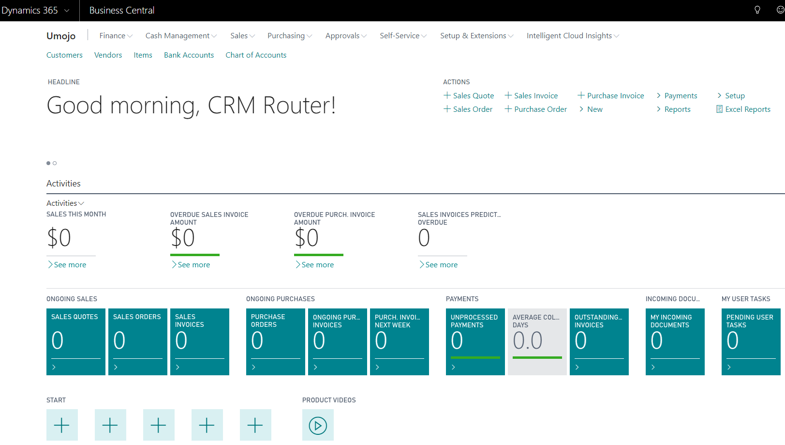
An ERP implementation for a service business, built on Microsoft Dynamics 365 Business Central.
Backend engineering and team leadership for virtual measurements, movement capture, and risk-assessment workflows.
A WebRTC and Node.js telemedicine component within the Injury Cloud healthcare ecosystem.
Workflow assistance for doctors and therapists, built with Dynamics CRM and ASP.NET MVC.
A virtual classroom for Princeton Theological Seminary using ASP.NET MVC, React, TypeScript, and WebRTC.
An education platform built on Dynamics 365 Sales and ASP.NET MVC for institutional processes.
Operations management for grain processing and food-related businesses using SharePoint, .NET, and Azure.
An ASP.NET MVC application supporting advertising-agency business operations.
A WebRTC and Node.js streaming-media project focused on virtual communication.
Web-part to app-part conversion within a SharePoint-hosted application.
A reporting application using .NET MVC, Web APIs, and Plotly.js charting.
An internal C# Windows Forms and MySQL application for credentials-management workflows.
An in-house attendance and HR application with organizational analytics, built in C#.
An ASP.NET Web Forms project supporting VoIP services for RaysTalk.
Try another technology, project name, or industry.
Selected contributions from professional engagements. ERP screenshots are from my project portfolio. Additional project visuals are illustrative.
THE JOURNEY SO FAR
From writing my first production systems to leading multidisciplinary engineering teams. Always building. Always learning.
Get the full CVMyMedicalHUB International Ltd. Florida, USA · Remote
Lead backend, frontend, mobile, and AI engineering for healthcare and sports platforms. Own architecture direction, team development, delivery, and production reliability.
MyMedicalHUB International Ltd. Florida, USA · Remote
Led platform delivery, established modular architecture and secure APIs, and brought product and engineering teams together around maintainable software.
Toggi Services Ltd. Dhaka, Bangladesh
Customized Dynamics 365 Business Central solutions for international clients across real estate, project services, healthcare, and distribution.
Multiversal Software Ltd. Dhaka, Bangladesh
Built Dynamics NAV and C# enterprise applications, integrated third-party services, and automated business data workflows.
Atom AP Limited Dhaka, Bangladesh
Developed real-time trading software and employee attendance systems with ASP.NET MVC, SignalR, and external platform APIs.
FOUNDATIONS & RECOGNITION
Academic excellence, professional credentials, and a lasting love for solving hard problems.
Engineering Faculty First · CGPA 3.79
PROFESSIONAL CREDENTIALS
Development and financial management in Dynamics 365 Finance and Operations; Sales and Customer Engagement; Microsoft Solutions Associate and Expert; and ITEE FE.
Explore all eight credentialsF&O credentials complement my primary hands-on specialization in Business Central and NAV.
THE COMPLETE CREDENTIAL COLLECTION
Full titles, examination codes, and dates earned.
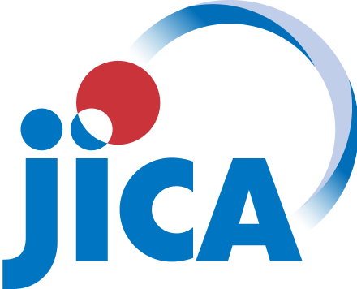
ITEE FE certificateIssuer logos shown. Credentials listed with their original award dates.
Recognized for three consecutive years for leadership, consistent delivery, and team contribution.
Received the recognition twice for delivery and innovation in business applications.
First merit position in B.Sc. Honours, with university merit scholarships across 2011–2013.
Training covered Azure SQL Database fundamentals, multitenancy and customer isolation, application-data security, business continuity and disaster recovery, Azure Cosmos DB, and Azure Search.
My continuing interests include movement analysis and pose estimation with MoveNet and MediaPipe.
Competitive programming keeps my thinking sharp — one algorithm, one challenge, one better solution at a time.
LET’S BUILD SOMETHING THAT MATTERS
DHAKA, BANGLADESH · WORKING GLOBALLY
Have an engineering challenge, a leadership opportunity,
or a product worth building? I’d love to hear about it.